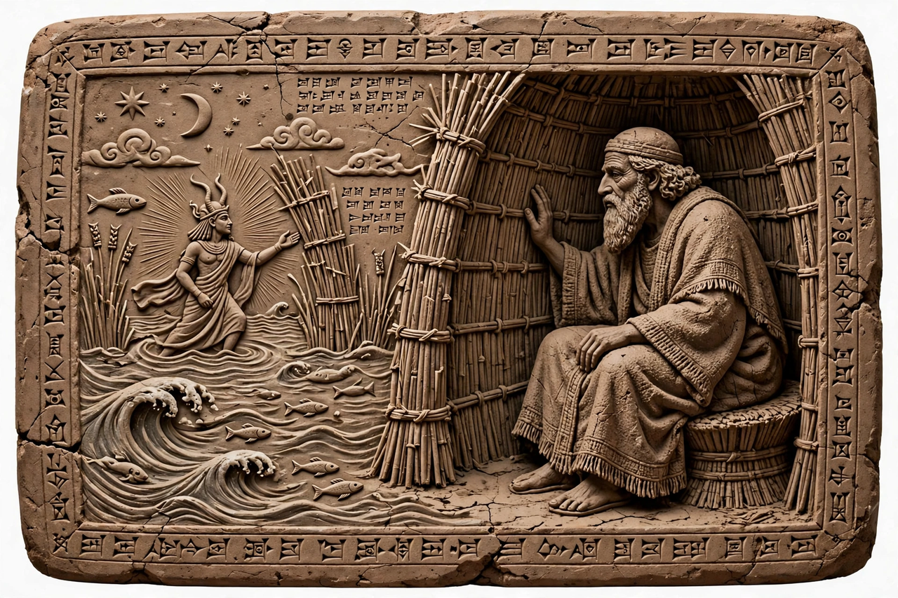

| Text | Akkadian flood epic |
|---|---|
| Date | Old Babylonian version c. 18th–17th century BCE |
| Protagonist | Atrahasis, "the very wise" |
| Deities | Enlil, Enki, Anu |
| Themes | Creation of humanity, the Flood |

Atrahasis (Akkadian: "the very wise") is the protagonist of an 18th-century BCE Akkadian epic that gives the most complete Mesopotamian account of the creation of humanity and the Great Flood. The epic of Atrahasis is a principal source for the flood traditions that also appear in the Epic of Gilgamesh and, in adapted form, in the biblical story of Noah (see Noah).
The epic begins when the lesser gods, the Igigi, rebel against the labour imposed on them by the great gods. To relieve them, the mother goddess creates humankind from clay mixed with the blood and intelligence of a slain god, and humans take over the work of digging canals and farming. But humanity multiplies and its noise disturbs the sleep of Enlil, who sends plague, drought and famine in succession to reduce its numbers. Each time, Enki secretly advises his favourite, Atrahasis, how to avert the disaster.
Finally Enlil resolves on a flood to destroy humanity altogether. Enki, bound by oath not to warn the humans directly, speaks to the reed wall of Atrahasis's house, telling him to build a boat. Atrahasis survives the seven-day deluge with his family and animals. Afterwards the gods, hungry without human offerings, regret their decision; Enki rebukes Enlil, and new measures — mortality, infertility and infant-snatching demons — are instituted to keep the human population in check.
The best-known copy of the epic, written by the scribe Ipiq-Aya at Sippar in the reign of Ammi-Saduqa, is held by the British Museum. Fragments of later Assyrian and Babylonian recensions show the text was copied for over a thousand years.
See also: Enlil · Enki · Noah · Tower of Babel